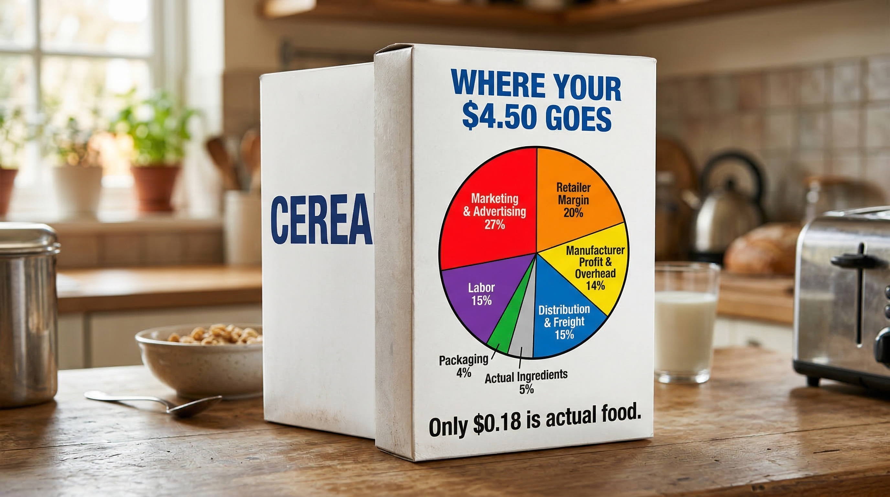

Groceries are brutal right now. Families across America are rearranging their budgets, cutting back, and stretching every dollar as far as it will go. But here's something nobody in the cereal aisle is talking about: some of the worst grocery value on the shelf is sitting right there at eye level, cheerfully packaged in yellow and red.
Honey Nut Cheerios is the best-selling cereal in America. General Mills sells over 139 million boxes a year. It is, by every measure, a cultural institution — a childhood staple, a pantry fixture, a product so familiar we stopped questioning it long ago. It's time to start questioning it.
10.8 oz box (Walmart)
actual ingredients
that buys real food
advertising
The Name Is a Fiction
Let's start with what's actually in the box — because the name "Honey Nut Cheerios" implies two things that are either missing entirely or present in quantities so small they barely count.
The "Nut" Problem
There are no nuts in Honey Nut Cheerios. Not a single one. No almonds, no hazelnuts, no walnuts — nothing. The "nut" flavor you taste is a synthetic laboratory compound, typically benzaldehyde or related chemical esters, manufactured to mimic roasted almond aroma. It appears on the label as "Natural Almond Flavor" — a term the FDA permits even for laboratory-produced compounds, as long as the original source material is natural somewhere in the production chain. General Mills uses this both for cost control and allergen management. But make no mistake: you are tasting chemistry, not nuts.
The "Honey" Problem
Honey is the fourth ingredient listed, behind whole grain oats, sugar, and corn starch. Federal labeling law requires ingredients to be listed in descending order by weight — meaning there is more refined sugar in this cereal than honey. By weight, a standard 10.8 oz box contains approximately 0.16 oz of honey — about one teaspoon. Even at that, the heat of industrial processing destroys most of the trace antioxidant properties real honey is sometimes credited with. What remains is functionally indistinguishable from any other form of added sugar.
The name "Honey Nut Cheerios" is not a description of what's in the box. It is a marketing decision.
"There is more money spent convincing you to buy this cereal than there is food inside it — by a factor of six."
What's Actually Inside
Here is the complete ingredient list, with estimated percentages by weight based on nutritional data and ingredient order. General Mills does not publish exact percentages, but FDA labeling rules and the nutritional panel allow reasonable reconstruction:
| Ingredient | Est. % by Weight | Est. Amount (10.8 oz box) | Bulk Wholesale Cost | Cost in Box |
|---|---|---|---|---|
| Whole Grain Oats | ~62% | 6.7 oz | ~$0.24/lb | ~$0.10 |
| Sugar | ~11% | 1.2 oz | ~$0.50/lb | ~$0.04 |
| Corn Starch | ~6% | 0.65 oz | ~$0.35/lb | ~$0.01 |
| Brown Sugar Syrup | ~4% | 0.43 oz | ~$0.45/lb | ~$0.01 |
| Honey | ~1.5% | 0.16 oz (≈1 tsp) | ~$2.00/lb | ~$0.02 |
| Canola/Sunflower Oil | ~1.5% | 0.16 oz | ~$0.85/lb | <$0.01 |
| Salt | ~1% | 0.11 oz | ~$0.10/lb | <$0.01 |
| "Natural Almond Flavor" | trace | trace | synthetic compound | <$0.01 |
| Vitamins & Minerals (12) | trace | trace | fortification blend | ~$0.01 |
| Total Ingredient Cost | ~$0.18 | |||
Where Does the Rest of Your $4.44 Go?
If the ingredients cost $0.18, what accounts for the other $4.26? Here is the breakdown, based on industry research into major cereal brand economics:
| Marketing & Advertising | 27% — $1.20 | |
| Retailer Margin | 20% — $0.89 | |
| Manufacturing & Labor | 15% — $0.67 | |
| Distribution & Freight | 15% — $0.67 | |
| General Mills Profit & Overhead | 14% — $0.62 | |
| Packaging | 4% — $0.18 | |
| Actual Ingredients | 4% — $0.18 | |
| Total | $4.44 |
Notice that General Mills spends more on advertising alone than it does on the food inside the box — by a factor of nearly seven. The cardboard box costs as much as the cereal it contains. You are paying, in effect, for a very expensive vehicle to deliver a very inexpensive product.

What You Can Do About It
Here is the good news: oats are cheap, delicious, and extraordinarily versatile. You do not need a box with a cartoon bee on it. What you need is about 25 minutes on a Sunday afternoon.
Weekend Granola
Make a week's worth of breakfast in one pan
Ingredients
- 3 cups rolled oats (~$0.75)
- ½ cup real honey (~$1.00)
- ⅓ cup olive or coconut oil (~$0.40)
- 1 tsp vanilla extract (~$0.10)
- 1 tsp cinnamon (~$0.05)
- ½ tsp salt (~$0.01)
- 1 cup real nuts of your choice (~$1.50)
- ½ cup dried fruit of your choice (~$0.50)
Method
- Preheat oven to 325°F
- Mix oats, oil, honey, vanilla, salt, and cinnamon until well coated
- Spread evenly on a parchment-lined baking sheet
- Bake 20–25 minutes, stirring once at the halfway point
- Remove, add nuts and dried fruit, let cool completely
- Store in a sealed jar — keeps for two weeks
The granola you make at home will be fresher, more filling, better tasting, and made from ingredients you actually chose. It will cost you roughly half of what a box of Honey Nut Cheerios costs — and provide twice the food. You can tailor it exactly to what you like: more nuts, less sweet, extra cinnamon, whatever dried fruit is on sale. The recipe above is a starting point, not a rule.
Cereal Is Just the Beginning
The economics of Honey Nut Cheerios are not unusual. They are the norm. Every heavily marketed, branded, processed food product on the shelf follows the same basic structure: minimal food cost, enormous brand cost. Once you see it, you cannot unsee it.
Here are a few other categories where the math is equally stark:
The grocery store is not designed to help you eat well for less. It is designed to move product efficiently and maximize revenue per square foot. Every endcap display, every eye-level shelf placement, every "family size" label is engineered to extract maximum value from your cart. The best defense is to walk past the center aisles more often and spend more time in the produce section, the bulk bins, and the meat counter.
"Real food — whole grains, vegetables, eggs, legumes, meat — has almost no marketing budget. That's exactly why it's a better deal."
Groceries are expensive right now, and that is genuinely hard. But not every dollar of that expense is unavoidable. Some of it is being spent on advertising budgets, corporate overhead, and cardboard boxes — dressed up to look like breakfast. It doesn't have to be. A bag of rolled oats at Walmart costs $3.48 for 42 oz. That's the same basic ingredient as Honey Nut Cheerios — just without the cartoon bee telling you to buy it.
Start there.